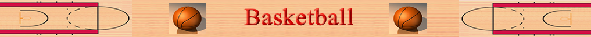

Basketball has many rules designed to keep the game running smoothly. Two teams with five players each score points by putting the basketball into a hoop on side of the rectangular basketball court while they must defend the other hoop on their side of the court. The game stats with the tip-off, during which one player from each team jumps up at center-court to try to grab the ball tossed up by the referee. This decides which team gets first possession. The court is split in half by the mid-court line. If the offensive team puts the ball into play behind the mid-court line, it has 10 seconds to get the ball past the mid-court line. If it doesn't, then the defense gets the ball. Once the offensive team gets the ball over the mid-court line, it can no longer take the ball back behind the line. If it does, the defense is given the ball.
When a player puts the basketball in the hoop, the player’s team gets 2 points if he was within the three-point line or 3 points if he was outside the three-point line. A free throw, which is an undisturbed shot, is worth 1 point. Free throws are awarded when fouls, illegal contact or plays, are committed.
Teams score points using the methods described above and whichever team has the most points at the end of time wins. The length of time in a basketball game varies but in professional leagues, there are four quarters of 12 minutes each, resulting in a 48-minute game. If the score is tied at the end of time, the teams go into overtime which has the same rules as normal play.

